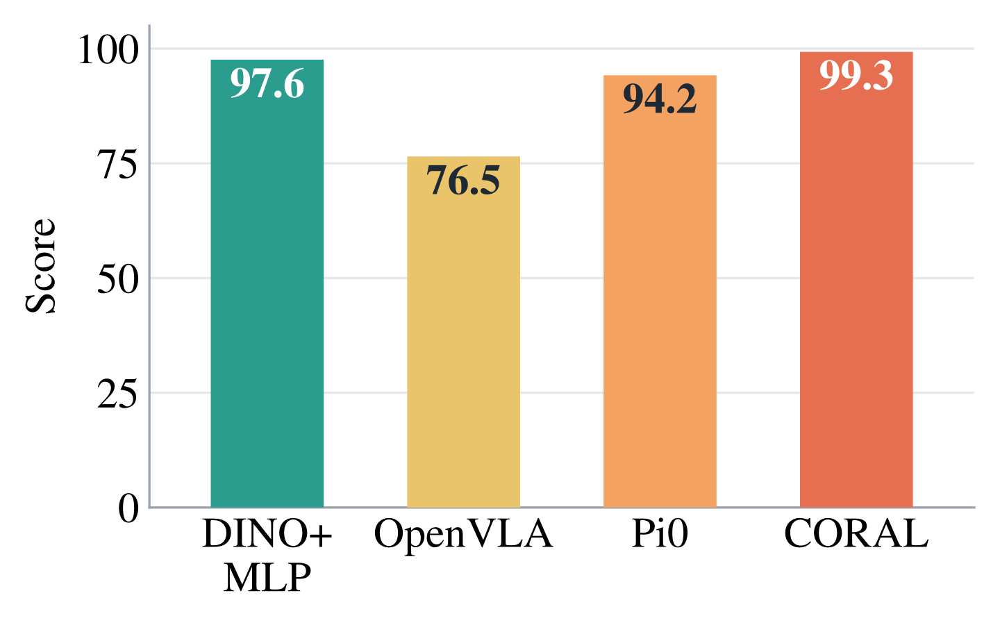

Shortcut Solvability

A benchmark score is evidence of capability only if any policy achieving it has the capability. We show that for LIBERO, a simple 0.09B probe with no language encoder and no large-scale robotics pretraining scores at or near the best reported result, while on RoboTwin 2.0 and RoboCasa it scores well below the best reported result.